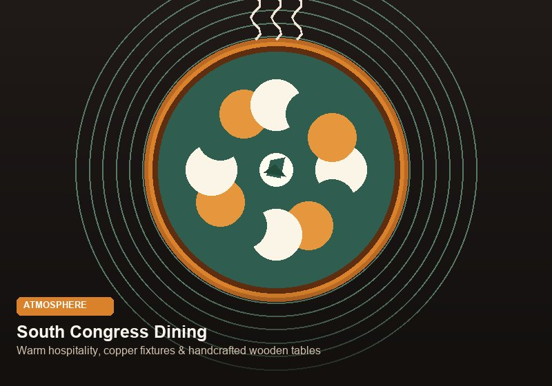
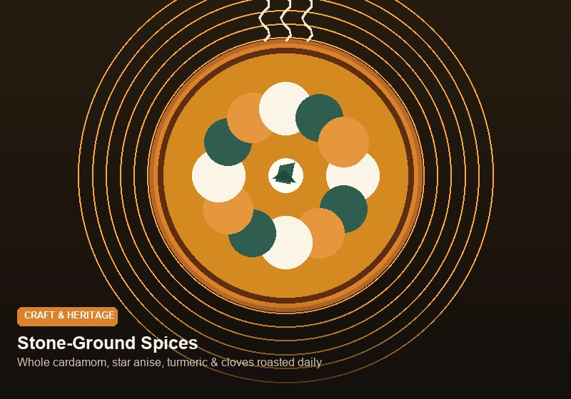
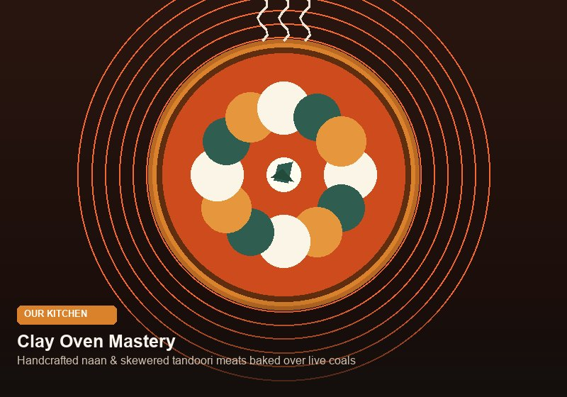

Zero Pre-Made Pastes
We never use commercial curry powders or jarred garlic-ginger pastes. Every marinade and base is prepared fresh daily from whole ingredients.
Masala Lane Kitchen began with a simple belief: genuine Indian food cannot be rushed.
Founded by Chef Rajan and Sunita Sharma, Masala Lane Kitchen is the realization of a lifelong culinary pilgrimage. Growing up between the spice markets of Old Delhi and the fertile farmlands of Punjab, Rajan learned the art of slow earthen-pot cooking beside his grandmother, who taught him that every whole spice has its own temperament and sacred roasting temperature.
When the Sharma family moved to Austin in 2018, they fell in love with Central Texas's vibrant food culture, passionate community, and warmth. However, they found that Indian dining was all too often reduced to rushed buffets, pre-made curry bases, and excessive heavy cream.
In 2021, they opened Masala Lane Kitchen on South Congress Ave to bring back patience. Here, gravies simmer uninterrupted for over 18 hours, whole cardamom and cumin seeds are toasted and stone-ground each sunrise, and handmade rotis and naans are baked over live mesquite coals in an authentic clay tandoor.



Every dish we serve is guided by four uncompromising culinary principles.
We never use commercial curry powders or jarred garlic-ginger pastes. Every marinade and base is prepared fresh daily from whole ingredients.
Authentic flavor cannot be hurried. Our Dal Makhani simmers for 24 hours, and our Biryanis rest under airtight dough seals to trap intoxicating aromas.
Plant-based and gluten-sensitive guests are never an afterthought. We maintain dedicated cookware for vegan dishes and clearly mark all allergens.
We partner with Central Texas organic farms for seasonal herbs, okra, and peppers, while importing our single-origin whole spices directly from Kerala and Kashmir.
“Food is an offering of love and respect. When you sit at our table on South Congress, you are family in our home.”
We would be honored to cook for you and your loved ones tonight.